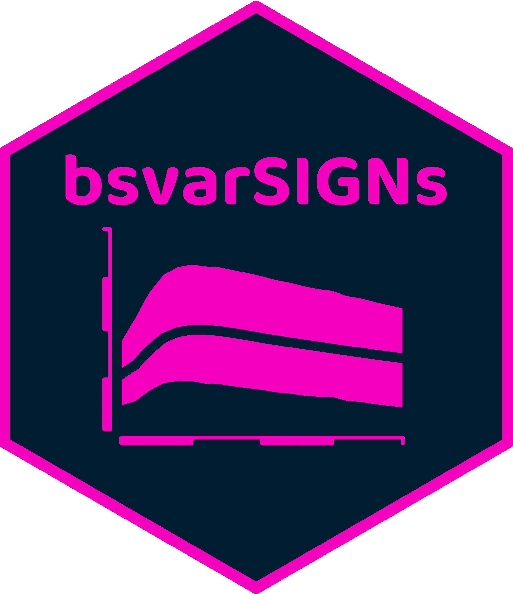
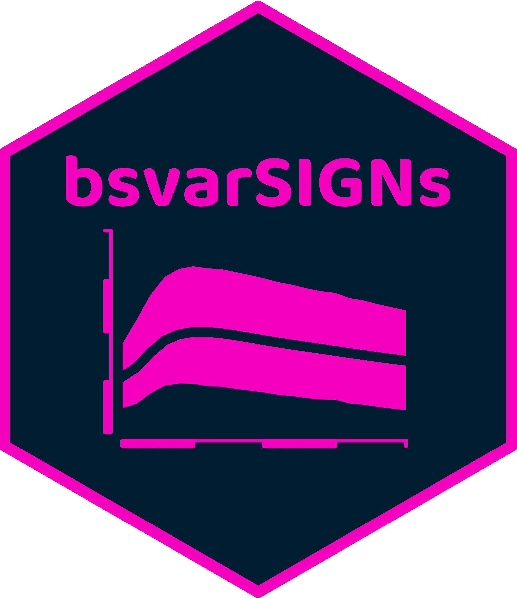
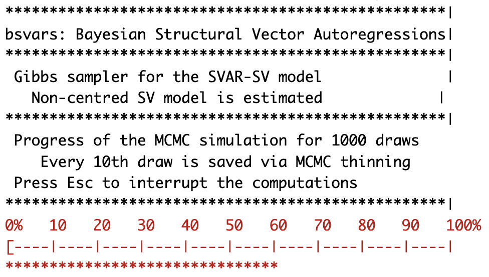
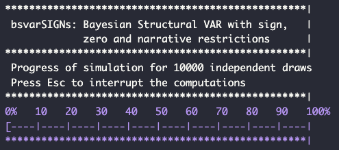
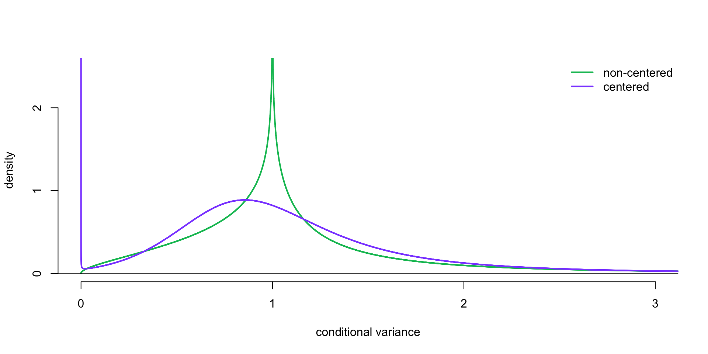
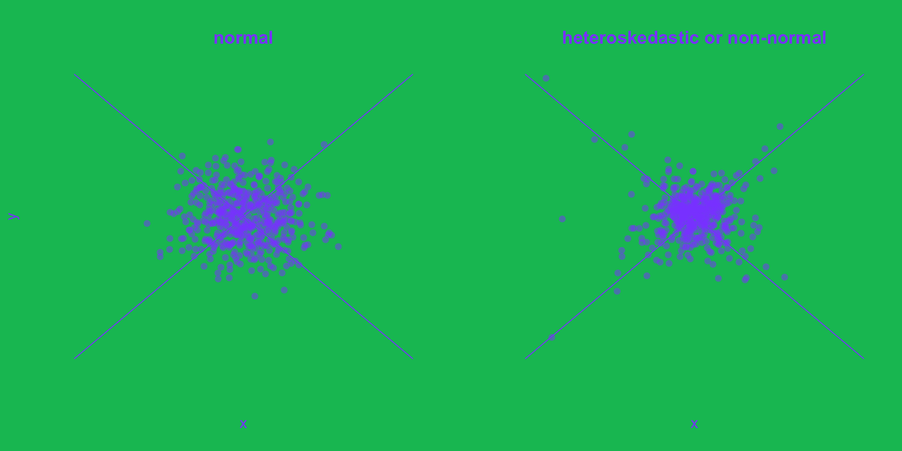
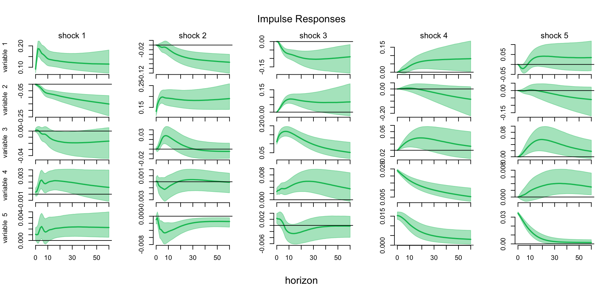
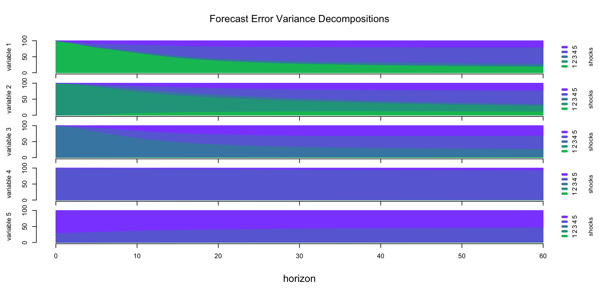
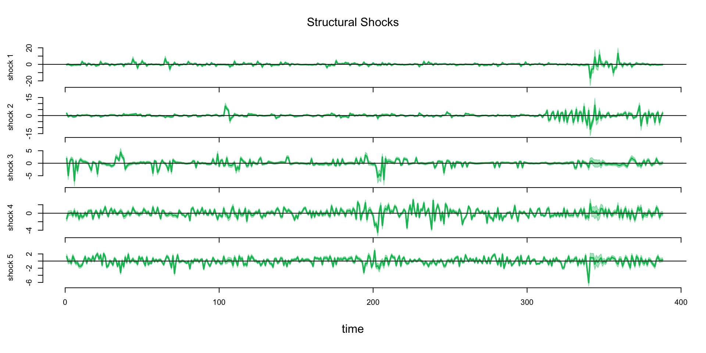
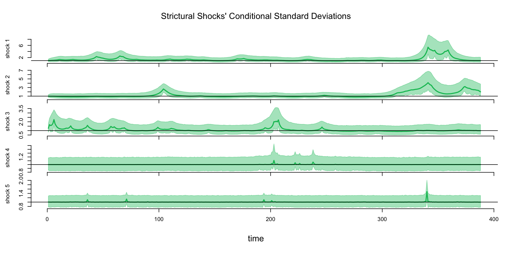

library(bsvars)
data(us_fiscal_lsuw) 

- 5 volatility & 3 non-normal models
- exclusion restrictions
- heteroskedasticity, and
- non-normality
- Priors: 3-level eq-specific local-global shrinkage
- flexible Bayesian VAR
- sign restrictions
- sign & zero restrictions
- narrative restrictions
- Priors: Minnesota with dummy observation and estimated shrinkage
- package and data loading
- simple model setup
spec = specify_bsvar$new(us_fiscal_lsuw)- simple estimation
burn = estimate(spec, S = 1000)
post = estimate(burn, S = 10000)- package and data loading
library(bsvarSIGNs)
data(optimism)- simple model setup
spec = specify_bsvarSIGN$new(optimism)- simple estimation
post = estimate(spec, S = 10000)
- structural analyses
irfs = compute_impulse_responses(post , horizon = 12)
fevd = compute_variance_decompositions(post, horizon = 12)
hds = compute_historical_decompositions(post)
ss = compute_structural_shocks(post)
csds = compute_conditional_sd(post)
sddr = verify_identification(post)- structural analyses
irfs = compute_impulse_responses(post , horizon = 12)
fevd = compute_variance_decompositions(post, horizon = 12)
hds = compute_historical_decompositions(post)
ss = compute_structural_shocks(post)
csds = compute_conditional_sd(post)
- predictive analyses
fvs = compute_fitted_values(post)
fore = forecast(post, horizon = 12)- plots and summaries
plot(irfs)
summary(irfs)- predictive analyses
fvs = compute_fitted_values(post)
fore = forecast(post, horizon = 12)- plots and summaries
plot(irfs)
summary(irfs)
- workflow with the pipe
library(bsvars)
data(us_fiscal_lsuw)
us_fiscal_lsuw |>
specify_bsvar$new() |>
estimate(S = 1000) |>
estimate(S = 10000) -> post
post |> compute_impulse_responses(horizon = 12) |> plot()
post |> compute_variance_decompositions(horizon = 12) |> plot()
post |> compute_historical_decompositions() |> plot()
post |> compute_structural_shocks() |> plot()
post |> compute_conditional_sd() |> plot()
post |> forecast(horizon = 12) |> plot()
post |> verify_identification() |> summary()- workflow with the pipe
library(bsvarSIGNs)
data(optimism)
optimism |>
specify_bsvarSIGN$new() |>
estimate(S = 10000) -> post
post |> compute_impulse_responses(horizon = 12) |> plot()
post |> compute_variance_decompositions(horizon = 12) |> plot()
post |> compute_historical_decompositions() |> plot()
post |> compute_structural_shocks() |> plot()
post |> compute_conditional_sd() |> plot()
post |> forecast(horizon = 12) |> plot()
- progress bar

- progress bar

Structural VAR
\[\begin{align} \text{reduced form:}&&\mathbf{y}_t &= \mathbf{A}\mathbf{x}_t + \boldsymbol{\varepsilon}_t \\ \text{structural form:}&&\mathbf{B}_0\boldsymbol{\varepsilon}_t &= \mathbf{u}_t \\ \text{structural shocks:}&&\mathbf{u}_t\mid\mathbf{x}_t &\sim N\left( \mathbf{0}_N, \text{diag}\left(\boldsymbol{\sigma}_t^2\right) \right) \end{align}\]
- interpretable structural specification
- identification via: exclusion restrictions, heteroskedasticity, and/or non-normality
- facilitates application of frontier numerical techniques
- features 3-level equation-specific local-global prior shrinkage
Non-centred Stochastic Volatility
\[\begin{align} &\\ \text{conditional variance:}&&\sigma_{n.t}^2 &= \exp\left\{\omega_n h_{n.t}\right\}\\ \text{log-volatility:}&&h_{n.t} &= \rho_n h_{n.t-1} + v_{n.t}\\ \text{volatility innovation:}&&v_{n.t}&\sim N\left(0,1\right)\\ \end{align}\]
- excellent volatility forecasting performance
- standardization around \(\sigma_{n.t}^2 = 1\)
verify_identification()by checking \(H_0:\omega_n = 0\)
Stochastic Volatility: conditional variances

Markov-switching and mixture models.
\[\begin{align} &\\ \text{structural shocks:}&&\mathbf{u}_t\mid s_t \sim N\left( \mathbf{0}_N, \text{diag}\left(\boldsymbol{\sigma}_{s_t}^2\right) \right)\\ \text{prior:}&& M^{-1}\left(\boldsymbol{\sigma}_{1}^2, \dots, \boldsymbol{\sigma}_{M}^2\right) \sim Dirichlet(\underline{a}\boldsymbol\imath')\\ \text{latent process:}&& s_t\sim \text{Markov or independent} \end{align}\]
- modelling Markov-switching or mixture models
- non-normality provides identification information
- potential gains in forecasting precision
verify_identification()by checking \(H_0:\boldsymbol{\sigma}_{1}^2, \dots, \boldsymbol{\sigma}_{M}^2 = 1\)
Student-t shocks.
\[\begin{align} &&&\\ \text{structural shocks:}&&\mathbf{u}_t\mid\mathbf{x}_t &\sim t\left( \mathbf{0}_N, \mathbf{I}_N, \nu \right) \end{align}\]
- \(\nu\) - the degrees of freedom parameter is estimated
- fat tails provide identification information
- potential gains in forecasting precision
- robustness to outliers
verify_identification()by checking \(H_0:\nu \rightarrow\infty\)
Heteroskedastic or non-normal shocks.

Identification verification via SDDR.
\[ SDDR = \frac{\Pr[H_0 | data]}{\Pr[H_1 | data]}= \frac{p(H_0 | data)}{p(H_0 )} \]
- suitable to verify sharp restrictions on parameters
- is interpreted as posterior odds ratio
- values greater than 1: evidence in favour of \(H_0\)
- estimated given the unrestricted model estimation output
verify_identification()verify_autoregression()
Zero-restriction-identified system.
\[\begin{align} \begin{bmatrix} B_{0.11}&0&0&0&0\\ B_{0.21}&B_{0.22}&0&0&0\\ B_{0.31}&B_{0.32}&B_{0.33}&0&0\\ B_{0.41}&B_{0.42}&B_{0.43}&B_{0.44}&0\\ B_{0.51}&B_{0.52}&B_{0.53}&B_{0.54}&B_{0.55} \end{bmatrix} \begin{bmatrix}rgdp_t \\ cpi_t \\ CR_t \\ EX_t\\ aord_t \end{bmatrix} &= \dots + \begin{bmatrix} u_t^{ad} \\ u_t^{as} \\ u_t^{mps} \\ u_t^{ex} \\ u_t^{aord} \end{bmatrix} \end{align}\]
Identified shocks.
- \(u_t^{mps}\) - monetary policy shock
- \(u_t^{ex}\) - currency shock
Specify and estimate the SVAR-SV.
library(bsvars)
load("soe.rda")
soe = as.matrix(soe)
TT = nrow(soe)
lag_order = 8
lag_exogenous = 4
T = TT - max(lag_order, lag_exogenous)
exogenous = matrix(NA, TT - lag_exogenous, 0)
for (i in 0:lag_exogenous) {
exogenous = cbind(exogenous, as.matrix(soe[(lag_exogenous - i + 1):(TT - i), 6:8]))
}
set.seed(1234)
spec = specify_bsvar_sv$new(
data = tail(soe[,1:5], T),
p = lag_order,
exogenous = tail(exogenous, T)
)
burn = estimate(spec, 1e4)
post = estimate(burn, 1e4)
SVAR-SV: Impulse responses.
post |> compute_impulse_responses(horizon = 60) |> plot(probability = 0.68, col = "#00bf63")
SVAR-SV: Forecast Error Variance decompositions.
post |> compute_variance_decompositions(horizon = 60) |> plot(col = bsvars_grad)
SVAR-SV: Structural shocks.
post |> compute_structural_shocks() |> plot(col = "#00bf63")
SVAR-SV: Conditional standard deviations.
post |> compute_conditional_sd() |> plot(col = "#00bf63")
SVAR-SV: identification verification.
post |> verify_identification() |> summary() **************************************************|
bsvars: Bayesian Structural Vector Autoregressions|
**************************************************|
Summary of identification verification |
H0: omega_n = 0 [homoskedasticity] |
H1: omega_n != 0 [heteroskedasticity] |
**************************************************| log(SDDR) NSE Pr[H0|data] Pr[H1|data]
shock 1 -139.2079238 56.216891 3.489529e-61 1.0000000
shock 2 -77.3369956 60.430724 2.588031e-34 1.0000000
shock 3 -20.9795368 20.576286 7.739322e-10 1.0000000
shock 4 -0.2618337 0.524091 4.349130e-01 0.5650870
shock 5 -2.5202529 1.911860 7.445051e-02 0.9255495
SVAR-SV: Fitted Values.
post |> compute_fitted_values() |> plot(col = "#00bf63")
SVAR-SV: Does foreign sector matter?
A0 = matrix(NA, 5, 56)
A0[,45:56] = 0
post |> verify_autoregression(hypothesis = A0) |> summary() **************************************************|
bsvars: Bayesian Structural Vector Autoregressions|
**************************************************|
Summary of hypothesis verification |
for autoregressive parameters |
**************************************************| log(SDDR) NSE Pr[H0|data] Pr[H1|data]
156.8253 4.668342 1 7.791643e-69